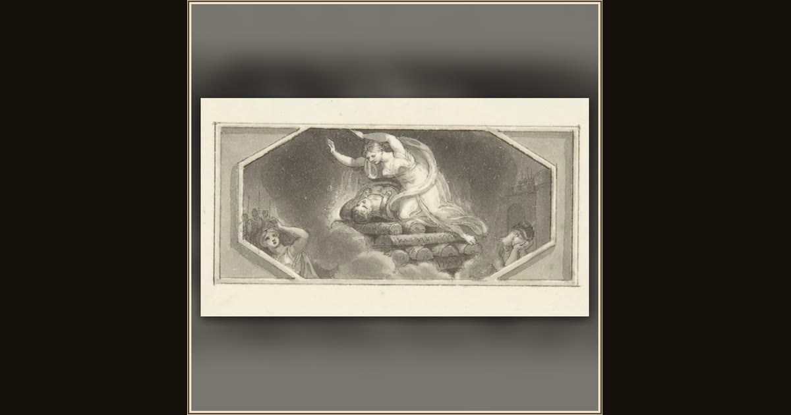

Evadne throws herself on the Funeral Pile of her Husband Capaneus
Edward Francis Burney (British, Worcester 1760–1848 London) · 1790–1800 · met
Evadne throws herself toward her armoured husband's funeral pile while onlookers recoil. She tells her father she will leap onto Capaneus's pyre (1065). Explore its place in Euripides's Plays, Suppliants, line 1079.